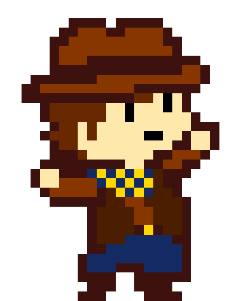

Geri Savaş - Tüm Bosslar
Nasıl Kurucağını bilmiyor musun?
-[ İYİ SON ]-
Dalv Martlet El Bailador Yılmaz Dörtlü Starlo Makro Froggit (Gizli Boss) Bekçivan Axis Ceroba
-[ KÖTÜ SON ]-
Dalv Martlet El Bailador Ceroba Axis Doruk Martlet-[ NÖTR SON ]-
Meta Flowey